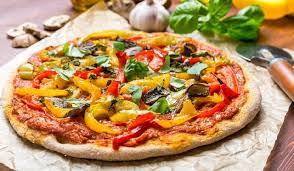

Pizza

This pizza uses hummus instead of the usual red sauce—a
unique and healthy pizza for those bored with the traditional.
Top with your favorite veggies and cheese.
Ingredients
- Broccolini or broccoli (blanch first) and pancetta/speck/bacon.
- Potato, sausage, pancetta/speck/bacon.
- Gorgonzola and mushroom.
- Black olives, anchovies, capers.
- Capers, anchovies, eggplant, capsicum.
Steps
- Materials/ Ingredients.
The materials and ingredients you will need for the pizza making process are all easy to get,
and many households should have most of them anyway.
- The Dough.
- The Sauce.
- Rolling Out the Dough.
- The Topping.
- Baking the Pizza.
Return